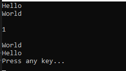
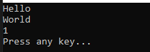

こんにちは。明月です。
この投稿はC#のインデクサー(indexer)を使う方法に関する説明です。
C#には他の言語にはない文法が何個かあります。
その中で一つが以前の投稿で説明したプロパティ(Property)です。
link - [C#] 21. C#のプロパティ(Property)
この投稿もC#の特別な文法のインデクサー(indexer)です。
インデクサー(indexer)は簡単に説明すると配列の形で関数を呼び出す機能です。文法の形はプロパティ(Property)と似てます。
using System;
using System.Collections.Generic;
namespace Example
{
// Indexerの例クラス
class Node
{
// メンバー変数
private List<string> data = new List<string>();
// これがインデクサー(indexer)の文法
// 関数名にはthisキーワードを入れて、パラメータを配列の形の大括弧で設定する。
public int this[string keyword]
{
// インデクサーのget
get
{
// 該当なキーワードの位置を返却
for (int i = 0; i < data.Count; i++)
{
// パラメータのkeywordとメンバー変数リストのオブジェクトアイテムと同じ値なら
if (string.Equals(data[i], keyword))
{
// リストの位置を返却
return i;
}
}
// キーワードが無ければ-1を返却
return -1;
}
// インデクサーのset
set
{
// リストから該当なデータ(keyword)を取り除く。
data.Remove(keyword);
// リストでindexに該当なⅠにデータを追加
data.Insert(value, keyword);
}
}
// 出力関数
public void Print()
{
// メンバー変数リストの順番で
foreach (var d in this.data)
{
// コンソール出力
Console.WriteLine(d);
}
}
}
class Program
{
// 実行関数
static void Main(string[] args)
{
// Nodeインスタンス生成
Node node = new Node();
// インデクサー(indexer)は配列みたいに使う。
// 大括弧のデータはインデクサーのパラメータ、値はvalueに設定
node["Hello"] = 0;
node["World"] = 1;
// コンソール出力
node.Print();
// 改行
Console.WriteLine();
// インデクサーのset関数を利用してHelloのリスト位置を変更
node["Hello"] = 1;
// インデクサーのget関数を利用してHelloの配列位置を確認
Console.WriteLine(node["Hello"]);
// 改行
Console.WriteLine();
// コンソール出力
node.Print();
// 任意のキーを押してください
Console.WriteLine("Press any key...");
Console.ReadKey();
}
}
}

上の例をみれば私がNodeクラスでインデクサー(indexer)関数を作りました。
インデクサー(indexer)はプロパティの文法みたに配列の値を受け取るデータタイプと入力するデータタイプを設定して関数名にはthisキーワードを使います。
そして配列みたいに使うので、配列のインデクサー役でString値を格納するし、イコールでデータは返却データタイプで値を格納します。
Mainの実行関数でnode[string] = intの形で実装するとset関数が呼び出すし、node[string]の型で実装するとget関数が呼び出します。
文法がプロパティ(Property)と似てます。なのでアクセス修飾子を設定する方法も似てますが、基本のアクセス修飾子はgetで設定して、set関数だけ別途にアクセス修飾子を設定することができます。
using System;
using System.Collections.Generic;
namespace Example
{
// Indexerの例クラス
class Node
{
// メンバー変数
private List<string> data = new List<string>();
// コンストラクタ(可変パラメータでデータを受け取る)
public Node(params string[] datas)
{
for (int i = 0; i < datas.Length; i++)
{
this[datas[i]] = i;
}
}
// これがインデクサー(indexer)の文法
// 関数名にはthisキーワードを入れて、パラメータを配列の形の大括弧で設定する。
public int this[string keyword]
{
// インデクサーのget
get
{
// 該当なキーワードの位置を返却
for (int i = 0; i < data.Count; i++)
{
// パラメータのkeywordとメンバー変数リストのオブジェクトアイテムと同じ値なら
if (string.Equals(data[i], keyword))
{
// リストの位置を返却
return i;
}
}
// キーワードが無ければ-1を返却
return -1;
}
// インデクサーのset(アクセス修飾子をprivateで設定)
private set
{
// リストから該当なデータ(keyword)を取り除く。
data.Remove(keyword);
// リストでindexに該当なⅠにデータを追加
data.Insert(value, keyword);
}
}
// 出力関数
public void Print()
{
// メンバー変数リストの順番で
foreach (var d in this.data)
{
// コンソール出力
Console.WriteLine(d);
}
}
}
class Program
{
// 実行関数
static void Main(string[] args)
{
// Nodeインスタンス生成
Node node = new Node("Hello", "World");
// コンソール出力
node.Print();
// Worldの位置を出力
Console.WriteLine(node["World"]);
// 任意のキーを押してください
Console.WriteLine("Press any key...");
Console.ReadKey();
}
}
}

プロパティ(Property)とインデクサー(Indexer)は他の言語にはない文法です。
この文法があることはオブジェクト指向プログラミング(OOP)のカプセル化により、メンバー変数をprivateに設定しますが、ゲッター、セッターを少し効率的に格納、取得するための文法です。
でも、プロパティの場合はよく使いますが、インデクサー(Indexer)はよく使いません。なぜかというと配列と似ている形なので、逆に迷う時が発生します。
ソースコードは可読性、つまり、ソースを読みやすく作ることが重要ですが、インデクサー文法が多いソースは逆に迷い込みやすいです。そのことでよく使わないですね。
特にC#だけ開発するデベロッパー(開発者)の方はインデクサー(Indexer)が凄く読みやすいっていうかもしれませんが、JavaやPythonなどの他の言語がメインのデベロッパー(開発者)の方は難しいというかもしれません。
その理由かな、実務プロジェクトでもよく見えない文法です。
ここまでC#のインデクサー(indexer)を使う方法に関する説明でした。
ご不明なところや間違いところがあればコメントしてください。
- [C#] 29. Linqクエリ式を使い方2019/07/17 20:57:00
- [C#] 28. リスト(List)とディクショナリ(Dictionary)、そしてLinq式を使い方2019/07/16 22:40:03
- [C#] 27. varキーワードとdynamicキーワード2019/07/16 20:41:27
- [C#] 26. 例外処理(try ~ catch)する方法2019/07/16 00:59:34
- [C#] 25. イベント(event)キーワードを使い方2019/07/16 00:48:03
- [C#] 24. ラムダ式(匿名関数)とAction、Func関数を使い方、そしてクロージャ(Closure)2019/07/16 00:36:19
- [C#] 23. デリゲート(delegate)2019/07/15 02:25:26
- [C#] 22. インデクサー(indexer)を使う方法2019/07/13 01:06:04
- [C#] 21. C#のプロパティ(Property)2019/07/13 00:56:20
- [C#] 20. オブジェクト指向プログラミング(OOP)の4つの原則(カプセル化、抽象化、継承化、多相化(ポリモーフィズム))2019/07/12 00:17:35
- [C#] 19. 列挙型(enum)を使う方法2019/07/11 23:13:25
- [C#] 18. 構造体(Struct)、そして値型を参照するタイプ(Reference of value type)と参照型を参照するタイプ(Reference of reference type)2019/07/10 23:57:25
- [C#] 17. thisとbaseのキーワード2019/07/10 23:43:56
- [C#] 16. 継承禁止のキーワードのsealed2019/07/10 00:19:18
- [C#] 15. インタフェース(interface)2019/07/10 00:06:17
- [C#] 44. ファイル(FileInfo)とディレクトリ(DirectoryInfo)を扱い2021/10/05 19:29:34
- [C#] 43. ストリーム(Stream)とバイナリ(byte[])、エンコード(Encoding)、そしてusingを使い方とIDisposableインターフェース2021/10/04 18:33:04
- [C#] 42. ファイルを扱い(IO)とファイルメタデータ(FileInfo)を使い方2021/10/01 20:10:21
- [C#] 41. Taskクラスとasync、awaitを使い方2021/10/01 18:59:14
- [Javascript ] WebのFull calendar(スケジュールカレンダー)の使い方法2021/07/15 21:35:36
- [Java] 56. Web serviceのサーブレット(Servlet)で初期化作業(properties設定)2021/07/02 17:10:36
- [Java] 55. Spring frameworkに文字化けを解決する方法(Encoding設定)2021/06/30 16:37:16
- [Java] 54. Spring frameworkでWeb filterを使う方法2021/06/29 18:25:12
- [Java] 53. ウェブサービス(Web service)でエラーページを処理する方法2021/06/25 13:35:54
- [Design pattern] 1-3. ファクトリメソッドパターン(Factory method pattern)2021/06/23 19:45:37
- [Java] WebSocketでチャット履歴をローディングする方法2021/06/15 18:34:45
- [Java] WebSocketを利用してユーザ(サイト運用者)が他のユーザとチャットする方法2021/06/15 17:20:08
- [Design pattern] 1-2. ビルダーパターン(Builder pattern)2021/06/11 19:06:28
- [Design pattern] 1-1. シングルトンパターン(Singleton pattern)2021/06/09 19:40:05
- [Design Pattern] デザインパターンの紹介2021/06/08 20:42:36